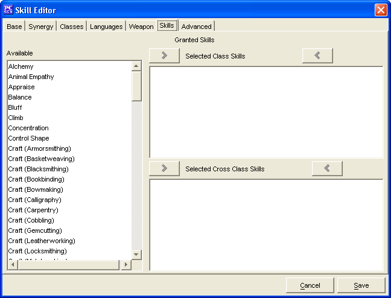

Skill Editor: Skills Tab

The Skills Tab is used to add a Skill for the Skill
being created.
The three Granted Skills windows, Available, Selected Class
Skills and Selected Cross Class Skills are used to create a
list of Granted Skills.
- The two sets of Add and Remove buttons will move the highlighted
Granted Skills between the 3 windows. Double clicking does not
work in this window.
- The weapons in the Selected Class Skills window are the ones that all who
obtain ranks in this Skill know automatically.
- Selected Cross Class Skills are additional skills of which only
one may be selected.
The Cancel and Save buttons, which appear on every tab, are used
to either cancel the Skill creation or save it to the customSkills.lst file.